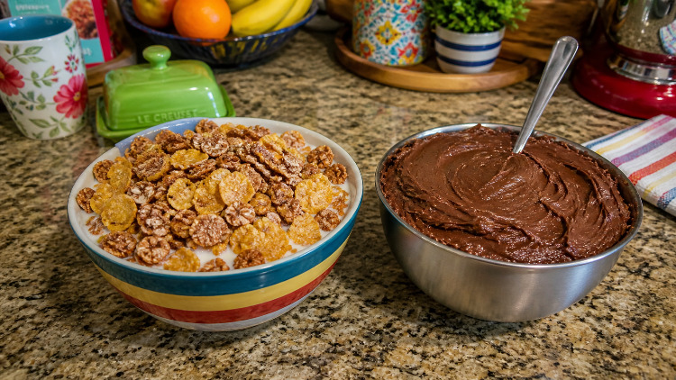

Cereal and Frosting

Sometimes, in the morning, I like to eat cereal. Actually, every morning I like to eat cereal. Two cereals. I take the first cereal, generic corn flakes, and fill my bowl to the seventy percent mark. Then I take cereal two, the generic version of honey bunches of oats, and top off the bowl. Mix around with a spoon, and add fat free milk until it overtakes the cereal. I will often do this late night as well.
I use this two cereal technique because I am a sugar junkie. I would prefer just to pour a whole bowl of cereal two and go to town on it. I don't though, because I know what is going to happen later that night.
It is now later that night. I'm pacing around my apartment, one thing on my mind. I know what I need. I head to the kitchen, take some butter, vanilla, milk, powdered sugar and cocoa powder. I stir them up, and before I know it, a magnificent chocolate frosting appears before my eyes. I eat this chocolate frosting with a spoon. Who needs cake? Well, I need cake. It just takes a lot longer to make. When I get that sugar twitch I just need to whip up something quick.
You can now see very clearly why I use this two cereal technique.